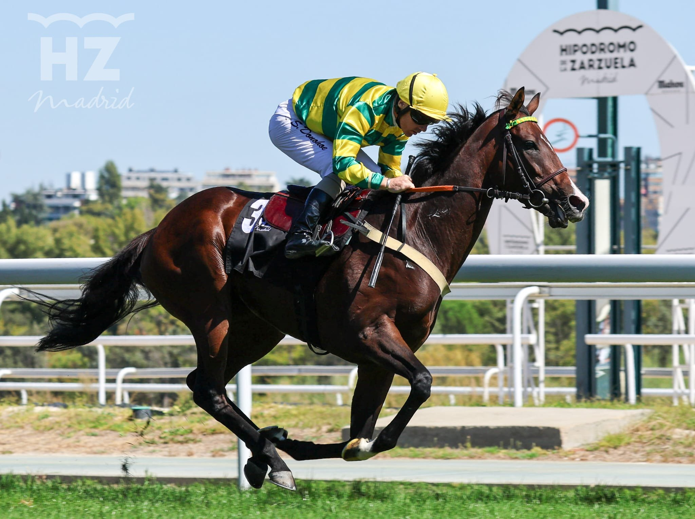

Sweet Caroline repite en el Benítez de Lugo y resiste el ataque de Nerja
Sweet Caroline, de la Cuadra San José, ganó por segundo año seguido el Gran Premio Ricardo Ruiz Benítez de Lugo, primer Gran Premio del otoño en La Zarzuela, en una mañana con doblete de Óscar Anaya.

Sweet Caroline salió a mandar y no soltó la cabeza en los 2.200 metros de la prueba de Categoría A, reservada a yeguas de tres años en adelante. Ocho entraron en los cajones. La favorita, con Steve Donohoe en la silla y preparada por Álvaro Soto, tuvo que aguantar en la recta el ataque de Nerja, que terminó segunda a menos de un cuerpo. Darkava remató con fuerza para ser tercera, casi a otro cuerpo.
Es hija de Zarak y Savage Rose, y su criador figura como Sparkling Star.
El nombre propio de la mañana, sin embargo, fue el del entrenador argentino Óscar Anaya, que se llevó dos de las seis carreras disputadas en la pista de hierba. Abrió con Ties of Love, de la Cuadra Dianday y montado por Nico Valle, en el Premio Biblioteca Turf “Miguel Ángel Ribera” – Tattersalls, sobre 1.400 metros para dos años. Mello Mello quedó a más de tres cuerpos y La Shana, tercera, a medio más. En esa carrera, Katxorro iba en punta cuando, a pocos metros de la meta, desmontó a Ignacio Melgarejo; ninguno de los dos sufrió consecuencias graves.
Después llegó Witiza, de la Cuadra Río Cubas, que con Juan Cruz Diestra encabezó en solitario el Premio Partipral (Categoría B), sobre 1.600 metros. Ganó yendo en cabeza desde la salida, con Gimme Love a más de un cuerpo y The Wiser tercero. La carrera servía de preparatoria para el Gran Premio de la Hispanidad.
La jornada se cerró con el Critérium de Potrancas (Categoría B), sobre 1.400 metros. Narcea, la favorita, remató en la recta para batir por un cuerpo a Reina Sioux, con Strelling tercera. La ganadora corre para la Cuadra Martul, la prepara Miguel Alonso Roldán y la montó Alejandro Gutiérrez Val.
Los hándicaps sobre 2.200 metros fueron para Dancelot, con Václav Janáček, y Nat Impact, con Borja Fayos. La Zarzuela vuelve a correr el jueves 24, con cinco carreras, y el domingo 27 de septiembre, con siete.
Fichas: Partipral (Usa) (caballo) · Witiza (caballo) · A.Soto (preparador) · O.Anaya (preparador)
— Redacción de Galope al Día